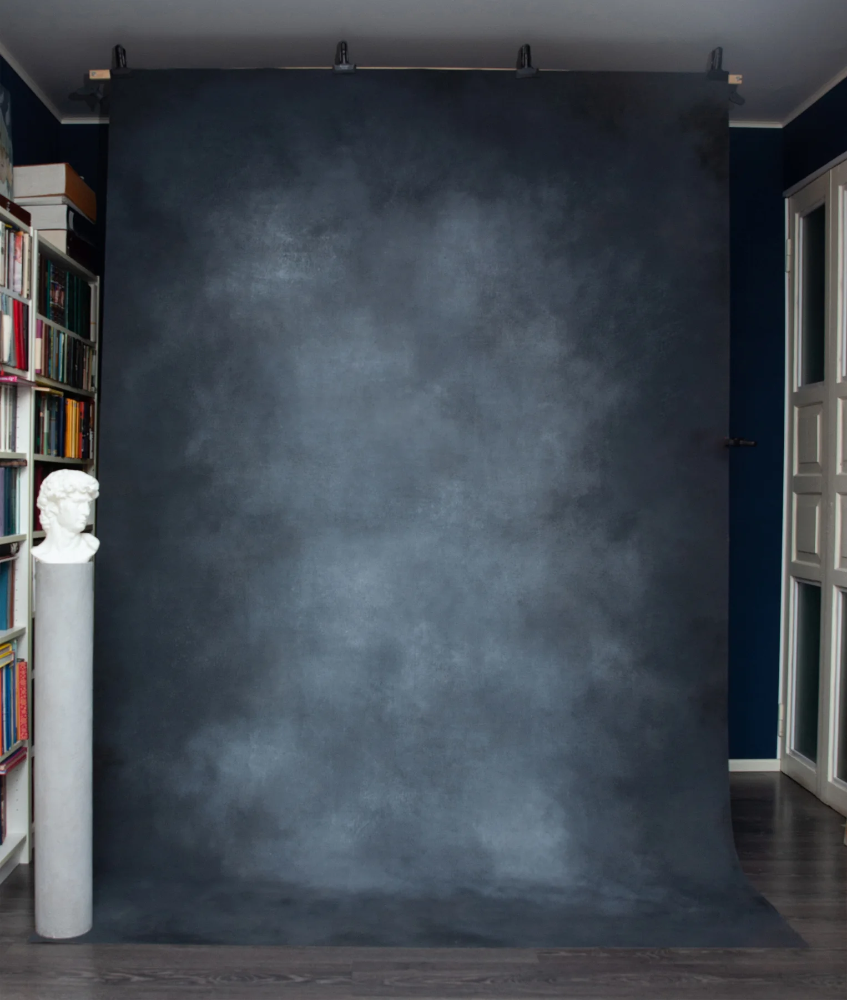
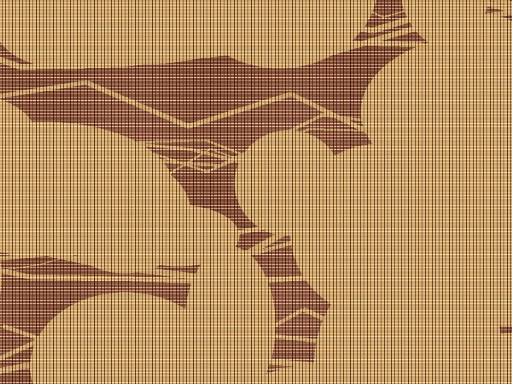

Портрет и студия
Живописная глубина для индивидуальных и семейных кадров.
ФОТОФОНЫ НА ХОЛСТЕ · НОВОСИБИРСК
Авторские фотофоны ручной работы для портретной, студийной, предметной и food-съёмки. Каждый холст создаёт собственное настроение и не повторяет другой.

Фоны для студии и выездных съёмокВИЗУАЛЬНАЯ ГАЛЕРЕЯ
Нажмите на любой фон — откроется сообщество VK, где опубликованы реальные работы, актуальное наличие и подробности заказа.

МАТЕРИАЛ И ФАКТУРА
Фоны создаются вручную на холсте. Многослойная работа с цветом формирует живую фактуру, а матовая защитная обработка помогает избежать нежелательных бликов.
ДЛЯ КАКИХ СЪЁМОК
Живописная глубина для индивидуальных и семейных кадров.
Выразительный фон для школьных и студенческих фотосессий.
Спокойные и графичные поверхности для товаров и брендов.
Фактура для еды, посуды, декора и композиций сверху.
ЗАКАЗ И АКТУАЛЬНОЕ НАЛИЧИЕ
Все новые работы, реальные примеры съёмок, размеры и условия заказа публикуются в VK.